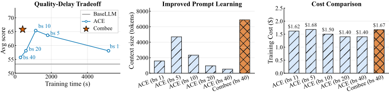
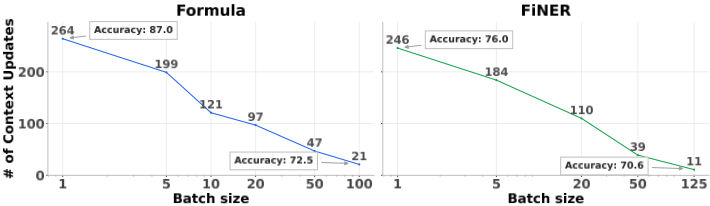
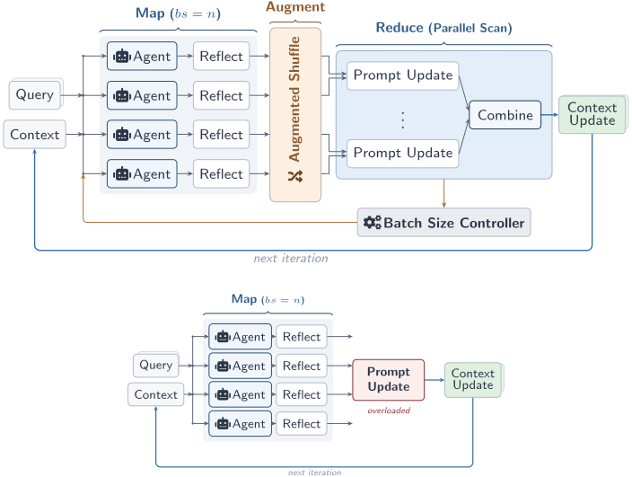
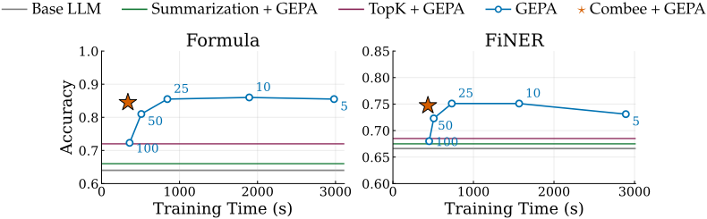
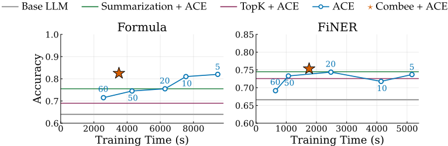
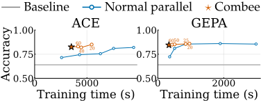
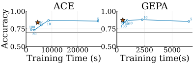
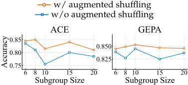

Combee：面向自我改进语言模型 Agent 的可扩展提示学习
ACE、GEPA 等 prompt learning 方法可让 Agent 从执行轨迹中提炼 playbook 或系统提示，在不更新参数的情况下自我改进，但其反思-聚合环节按串行或低并行设计；朴素增大并行批量会引发 context overload，聚合 LLM 倾向保留泛化模式而丢弃高价值具体经验，即使所有反思都在 128K 窗口内也会掉点。Combee 提出 Map-Shuffle-Reduce 范式：用 k=⌊√n⌋ 分组的层级 parallel scan 聚合反思、将每条反思默认复制 2 次并打乱的 augmented shuffling、以及基于幂律延迟曲线自动选批量的 dynamic batch size controller。在 AppWorld、Terminal-Bench 2.0、Formula、FiNER 上，Combee 相比已有方法最高 17× 提速，准确率持平或更优且成本相当；AppWorld 上 playbook 保留 6,887 tokens（朴素并行仅 526）。该框架与具体 prompt learning 方法解耦，已在 ACE 与 GEPA 上验证并开源，对团队大规模并行跑 Agent 后聚合经验、沉淀提示资产的流程有直接参考价值。
现有 prompt learning 方法（ACE、GEPA 等）围绕串行或低并行的 generate-reflect-update 循环设计，缺乏向高并行扩展的原则性策略。朴素增大批量会使聚合 LLM 一次性压缩过多反思，产生更少、更泛化的上下文更新（论文称为 context overload），丢弃驱动下游性能的高价值具体条目，导致并行加速与学习质量不可兼得，也使从大规模 Agent 轨迹中高效学习、以及在并行 Agent 场景下及时自适应变得困难。
Combee 是一个与具体 prompt learning 方法无关的分布式框架，包含三个组件：(1) Parallel scan aggregation：将 n 条轨迹的反思分成 k=⌊√n⌋ 个子组，先组内聚合成局部上下文更新，再层级归并为全局更新，避免聚合器过载；(2) Augmented shuffling：每条反思默认复制 p=2 次并打乱后分发给 worker 节点，增加关键信息被纳入学习的机会；(3) Dynamic batch size controller：试跑一组候选批量、拟合幂律延迟曲线，在边际延迟收益低于峰值斜率 1.6% 阈值处选取最大安全批量。整体遵循 Map-Shuffle-Reduce 范式，已在 ACE（文本 playbook）与 GEPA（进化搜索优化系统提示）上原型化。
朴素并行在 Formula 上从 batch 1 到 batch 100 准确率从 87.0% 降至 72.5%，上下文更新条目从 264 降至 21；FiNER 从 76.0% 降至 70.6%，条目从 246 降至 11
顺序学习下 Formula playbook 有 19 条 h≥3 的高价值条目（264 条、174 次 helpful 命中），batch 100 朴素并行后 h≥3 条目归零（总命中仅 5）；FiNER playbook 38 条 h≥3 条目在 batch 125 后归零（总命中仅 4）
AppWorld 上 batch 1 到 40 准确率从 58.1 降至 55.7（无上下文学习基线 53.3）；Combee 在 batch 40 取得所有方法中最高平均分与 SGC，相比顺序基线（每 epoch 86 分钟）12× 提速，playbook 保留 6,887 tokens 而朴素 batch 40 仅 526
Terminal-Bench 2.0 上 Combee 在 batch 30 恢复大部分顺序学习质量，训练时间缩短超过 17×；playbook 8,023 tokens 接近顺序基线的 9,067 tokens
ACE 设置下 Combee 在 Formula 与 FiNER 取得最高准确率，训练比质量可比基线快 2.4× 以上；GEPA 设置下以不到一半时间匹配最佳固定批量准确率
Top-K Retrieval 与 Summarization 两个提示级缓解基线的生成质量明显差于 Combee 与朴素 ACE 方法
在 GPT-OSS 120B 上组件可无缝跨模型迁移，呈现相同的质量-延迟优势；整体相比已有方法最高 17× 提速，准确率持平或更优且成本相当
区别于 ACE、GEPA、ExpeL、Voyager、ReasoningBank、Dynamic Cheatsheet 等关注'存储/检索/复用什么信息'的工作，Combee 关注'如何扩展上下文学习过程本身'：如何让多个 worker 并行学习、并将局部上下文更新在高并发下聚合为一致的全局上下文。论文将分布式训练的类比系统化——上下文更新类似梯度、聚合类似梯度聚合——并把 parallel scan、增广 shuffle、动态批量（类比 critical batch size）等分布式系统思想引入 prompt learning；同时实证表明 summarization 与 Top-K 检索等提示级手段无法解决 context overload，且该并行抽象可与现有记忆框架叠加使用。
相关度级别：high
命中能力域：3.1 上下文工程与记忆 | 3.2 提示工程 | 3.5 评测与可靠使用
理由：论文直接命中团队核心域：3.2 提示工程（对 ACE/GEPA 等自动提示优化方法的规模化）与 3.1 上下文工程与记忆（playbook/上下文工件的组织、聚合与 context overload 管理，且明确不训练模型、只做推理时上下文适配）；同时以'同等成本下最高 17× 提速'为核心指标，覆盖 3.5 的成本与效率优化，实验基于 AppWorld、Terminal-Bench 等 Agent 评测基准。这与团队'用好模型而非训练模型'的定位完全一致：当团队并行运行大量 Agent（批量代码审查、测试生成等）并希望从轨迹中沉淀可复用提示资产时，本文提供了可直接复用的聚合策略与工程参数（√n 分组、复制 2 次 shuffle、动态批量阈值）。
建议动作：深入精读并做内部分享
arXiv:2604.04247v1 [cs.AI] 2026年4月5日
提示学习的最新进展使大型语言模型 Agent 能够在不更改参数的情况下，从推理时上下文中获取与任务相关的知识。例如，现有方法（如 ACE 或 GEPA）可以基于先前的 Agent 运行来学习系统提示，从而提升准确率。然而，这些方法主要聚焦于单 Agent 或低并行度的设置。这从根本上限制了它们从大量收集的智能体轨迹（agentic traces）中高效学习的能力。以并行方式运行提示学习，以顺应从大量智能体轨迹或并行 Agent 执行中学习的日益增长的趋势，将是高效且有益的。然而，由于缺乏有原则的扩展策略，现有方法在高并行度下会出现质量下降。为了同时提升提示学习的效率与质量，我们提出了 Combee，一个用于扩展自我改进 Agent 并行提示学习的新型框架。Combee 加速了学习过程，并支持并行运行大量 Agent，同时从它们的聚合轨迹中学习而不出现质量下降。为实现这一目标，Combee 利用并行扫描（parallel scans）并采用一种增强的混洗（shuffle）机制；Combee 还引入了动态批大小控制器，以在质量与延迟之间取得平衡。在 AppWorld、Terminal-Bench、Formula 和 FiNER 上的评估表明，Combee 在保持相当或更优的准确率以及同等成本的同时，相比先前方法实现了高达 17 × 的加速。

大语言模型（LLMs）在数学和编程等任务中表现出色（Lu et al., 2024; Jimenez et al., 2024; Agarwal et al., 2024）。然而，现实世界中的问题求解通常需要从仅在推理时才可获得的信息中学习（Dou et al., 2026; Mang et al., 2025）。这些信息通常以
为了解决这一问题，我们提出了 Combee，一个面向可扩展提示学习（prompt learning）的分布式框架。Combee 采用 Map-Shuffle-Reduce 范式：多个 Agent 并行处理不同的上下文分片（Map），反思内容被复制并打乱以防止信息丢失（Shuffle），而分层并行扫描算法将局部更新聚合为连贯的全局上下文，同时不会使 LLM 上下文管理器过载（Reduce）。动态批量大小控制器还能在各次迭代之间自动平衡质量与训练延迟。Combee 与具体框架无关，只需极少的改动即可与现有提示学习方法集成：我们在 ACE 和 GEPA 上对其进行了原型实现，并期望其能够推广到其他“生成-反思-更新”框架。在智能体基准测试（benchmark）AppWorld（Trivedi et al., 2024）和 Terminal-Bench（Merrill et al., 2026），以及领域特定任务 FiNER（Loukas et al., 2022）和 Formula（Wang et al., 2025a）上的评估表明，Combee 相比基线方法实现了最高 17 × 的加速，同时保持相当或更优的准确率，且成本相当。相关实现已发布于 https://github.com/gepa-ai/gepa 和 https://github.com/ace-agent/ace 。
总结而言，我们的贡献包括：
2

提示学习（prompt learning）是一种新兴的推理时学习范式，其中 Agent 从丰富的输入（执行轨迹、工具调用轨迹、文档）中提取与任务相关的知识，并将其整合为操作手册（playbook）、记忆或技能库等可复用的产物，从而在没有任何权重更新的情况下提升当前或未来的性能（Zhang et al., 2025a; Agrawal et al., 2025; Suzgun et al., 2025; Wang et al., 2025b）。
在本工作中，我们关注遵循“生成-反思-更新”（generate-reflect-update）循环的方法：Agent 执行一个任务，对其轨迹进行反思以提取有用的洞见，并更新共享的上下文产物以供后续迭代使用。我们的目标是将这一循环扩展到高并行度，即在每次迭代中并发启动多个 Agent，同时保持由此产生的上下文更新的质量。这一范式已被广泛采用：
针对上述通用生成-反思-更新范式来扩展提示学习（prompt learning）的一种自然方法，是在生成上下文更新之前增大反思的批大小（batch size），从而在更新上下文之前聚合更多反馈信号。此处批大小指的是在一次迭代中，生成单个上下文更新之前所聚合的并行 Agent 轨迹或反思的数量。这种方法看似简单诱人，但在实践中却会因一种我们称为上下文过载（context overload）的现象而失效：随着批大小的增大，聚合器大语言模型（LLM）必须把日益庞大的反思体量蒸馏进单个上下文更新，导致产生的条目数量大幅减少且质量更低。关键的是，即使所有反思都能容纳在模型的上下文窗口之内（我们使用具有 128K 上下文的 DeepSeek-V3.1），这种退化依然会发生，这就排除了简单截断作为成因的可能。相反，聚合器似乎在进行有损压缩（lossy compression）：当同时面对大量反思时，它会默认保留宽泛、泛化的模式，而丢弃那些对下游准确率具有超比例驱动作用的具体高价值洞见。
3
定量证据 图 2 展示了朴素扩展在 Formula（数值推理）（Wang et al., 2025a）和 FiNER（金融实体识别）（Loukas et al., 2022）上造成的信息损失。在这两种设置中，上下文更新的数量都随批大小单调下降：在 Formula 上从 264（批大小 1）降至 21（批大小 100），在 FiNER 上从 246 降至 11。准确率也呈现相同趋势：Formula 从 87.0% 降至 72.5%，FiNER 从 76.0% 降至 70.6%。同样的模式也出现在智能体任务上：在 AppWorld（Trivedi et al., 2024）上，从批大小 1 扩展到批大小 40 会使准确率从 58.1 降至 55.7，逼近无上下文学习基线的 53.3（表 1）。
定性证据 这种退化不仅体现在数量上。在 ACE 中，最终学得的系统提示是一个包含众多条目的 playbook。每个条目在推理过程中会被标记为 helpful（h）或 harmful（r），从而为条目效用提供一种度量。在顺序学习（批大小 1）下，Formula 的 playbook 在 264 个条目上累计了 174 次 helpful 命中，其中 19 个条目达到 h ≥ 3，最高为 h = 16；FiNER 的 playbook 在 246 个条目上累计了 331 次 helpful 命中，其中 38 个条目达到 h ≥ 3。而在朴素扩展下，这些高价值条目完全消失：批大小 100 的 Formula playbook 中 h ≥ 3 的条目为零（helpful 命中总数：5），批大小 125 的 FiNER playbook 中同样为零（helpful 命中总数：4）。附录 E 提供了具体的 playbook 快照，展示了在高并行度下，任务特定策略（例如 Formula 特定的边界情况处理、精确的舍入协议）如何坍缩为泛化的提醒。
这揭示了一个根本性的矛盾：提高并行度可以缩短实际训练时间，但朴素的聚合方式会破坏那些使提示学习得以发挥效力的细粒度知识。朴素扩展的最佳平衡点——即能在一定程度上避免过载的较小批量大小——只能带来较为有限的加速；而要实现有意义的加速所需的大批量大小，则会使质量向无上下文学习（no-context-learning）基线坍缩。
我们提出 Combee，一个通过并行生成与适配实现可扩展提示学习的框架。Combee 对先前工作（Zhang et al., 2025a; Agrawal et al., 2025; Li et al., 2024）中的提示学习进行了扩展，使其能够支持高并行度，同时保持质量。
为应对上下文过载的挑战，Combee 引入了三个关键组件：并行扫描聚合（parallel scan aggregation）、增强洗牌（augmented shuffling）和动态批量大小控制器（dynamic batch size controller）。这些组件协同工作，确保学习过程在高并行度下保持稳定且高效：(1) 为解决上下文过载问题，我们采用并行扫描算法来聚合从多条轨迹中学到的经验。(2) 为确保重要信息不被遗漏，Combee 在将反思分发到聚合树之前先施加增强洗牌，使每条反思都有多次机会被纳入。(3) 为了从大量轨迹中学习，我们引入了动态批量大小控制器，它能在运行时动态确定一个高效且安全的批量大小。这些优化使 Combee 能够在多个并行 Agent 之间进行协调，并随时间推移不断自我改进而无需手动调优，就像一个蜂群，各个 Agent 协同工作，高效地构建和维护整个系统。
Combee 的一个核心设计是并行扫描聚合（parallel scan aggregation）算法，该算法旨在高效地聚合来自多条并行轨迹的学习经验，同时避免 §2.2 中观察到的上下文过载问题。
为了解决这一问题，Combee 采用多级并行扫描算法来聚合来自多条轨迹的学习经验，其方式能够防止聚合器过载。给定生成的 n 条轨迹，Combee 可以选择先将它们分成 k 个子组，每个子组包含 n / k 条轨迹。Combee 不是将来自 n 条轨迹的所有反思直接馈送给聚合器，而是可以先将每个轨迹子组内的反思聚合为上下文更新。然后，Combee 可以进一步将这 k 个上下文更新聚合为本轮的单一更新。从概念上讲，这类似于并行计算中用于执行前缀和运算的并行扫描算法（Blelloch, 1990），该算法最近也被序列建模领域所采用（Gu & Dao, 2024）。该方法还借鉴了用于 LLM 处理长文档的 MapReduce 式分解思想（Zhou et al., 2024）。默认情况下，Combee 将 k 设为 ⌊ √ n ⌋，使得聚合树的每一层处理的条目数量相近：第一层基于每组 n / k = √ n 条反思生成上下文更新，而第二层聚合 k = √ n 个更新。此外，如后文图 7 所示，该设计在实证上取得了更好的质量。
4

流行的上下文工程方法，包括 GEPA（Agrawal et al., 2025）和 ACE（Zhang et al., 2025a），都引入了反思步骤，以从 rollout 中提取过往洞见。这些反思通常具有较高的信息密度：尽管它们仅由少量 token 组成，却包含智能体改进所必需的关键信息。为了在并行学习过程中充分利用这些高密度信息而不丢失关键洞见，Combee 引入了一种增强洗牌（augmented shuffling）机制。具体而言，给定一组 x 条已生成的反思，Combee 将每条反思复制 p 次（默认 p = 2），并在将增强后的集合下发到工作节点（worker nodes）之前对其进行洗牌。通过让每条反思拥有多次参与学习过程的机会，呼应自洽性（self-consistency）（Wang et al., 2022）背后的原理，Combee 提高了聚合器即使在大批大小下也能从反思中学习的几率。这使得并行学习流水线在批大小增大的情况下依然保持鲁棒性。
并行扫描聚合与增强洗牌确保了学习质量在广泛的批大小范围内得以维持。因此，批大小的选择主要归结为一个速度问题：随着批大小的增大，每个 epoch 的延迟会降低（更多样本被并行处理）；但收益递减，这类似于分布式训练中的临界批大小（critical batch size）概念（McCandlish et al., 2018）。尽管如此，过大的批大小仍可能降低学习质量，因此我们希望将其保持在合理范围内。为此，我们选择仍能带来有意义延迟降低的最大批大小，同时设置一个上限，以避免不必要的质量下降风险（Smith et al., 2017; Goyal et al., 2017）。
为了找到这个点，我们通过在一组默认候选批大小 { bs 1 , bs 2, . . . , bs k } 上运行试验迭代来剖析延迟。对于每个候选值 bsi，我们运行一次迭代以测量延迟 d ( bsi )，并将其转换为估计的 epoch 时间：
其中 N train 为训练集大小。我们对测量数据拟合出一条幂律延迟曲线：
基于拟合得到的曲线，我们选择边际延迟降低低于固定阈值 τ 1 时的批大小。求解 ∣ ∣ ∣ dT epoch d bs ∣ ∣ ∣ = τ 可得：
我们对 Combee 进行评估后得到的主要结论如下：
任务与数据集 我们在 agentic 与领域特定的基准测试（benchmark）上评估 Combee。
1 在我们的实验中，我们将 τ 设为峰值斜率大小的 1.6%。这意味着，一旦每个新增单元使 epoch 时间的缩短量低于最陡改进率的 1.6%，我们就停止增加 batch size。
| Method. | Batch.Size | Playbook.Size (tokens) | Training.Time (min) | Training.Cost | Test-Normal.TGC ↑ | Test-Normal.SGC ↑ | Test-Normal.Avg ↑ |
|---|---|---|---|---|---|---|---|
| ReAct | - | - | 0 | $0 | 63.7 | 42.9 | 53.3 |
| ReAct + ACE | 1 | 1,578 | 86 | $1.62 | 66.1 | 50.0 | 58.1 |
| Parallel Prompt Learning | Parallel Prompt Learning | Parallel Prompt Learning | Parallel Prompt Learning | Parallel Prompt Learning | Parallel Prompt Learning | Parallel Prompt Learning | Parallel Prompt Learning |
| ReAct + ACE | 5 | 4,697 | 30 | $1.68 | 70.2 | 57.1 | 63.7 |
| ReAct + ACE | 10 | 2,329 | 19 | $1.50 | 72.0 | 58.9 | 65.4 |
| ReAct + ACE | 20 | 954 | 10 | $1.40 | 67.9 | 48.2 | 58.1 |
| ReAct + ACE | 40 | 526 | 5 | $1.40 | 66.7 | 44.6 | 55.7 |
| ReAct + Combee | 40 | 6,887 | 7 | $1.67 | 70.8 | 60.7 | 65.8 |
| Method. | Batch.Size | Playbook.Size (tokens) | Training.Time (min) | Training.Cost | Test-Normal.TGC ↑ | Test-Normal.SGC ↑ | Test-Normal.Avg ↑ |
| Method | Batch Size | Playbook Size (tokens) | Training Time (min) | Training Cost | Average Accuracy @ 1 |
|---|---|---|---|---|---|
| Terminus-2 | - | - | 0 | $0 | 32.2% |
| Terminus-2 + ACE | 1 | 9,067 | 42.4 | $0.24 | 37.9% |
| Parallel Prompt Learning | Parallel Prompt Learning | Parallel Prompt Learning | Parallel Prompt Learning | Parallel Prompt Learning | Parallel Prompt Learning |
| Terminus-2 + ACE | 5 | 4,983 | 10.2 | $0.17 | 29.9% |
| Terminus-2 + ACE | 10 | 3,967 | 5.6 | $0.15 | 33.3% |
| Terminus-2 + ACE | 30 | 3,150 | 2.1 | $0.13 | 31.0% |
| Terminus-2 + Combee | 30 | 8,023 | 2.4 | $0.17 | 35.6% |
| Method | Batch Size | Playbook Size (tokens) | Training Time (min) | Training Cost | Average Accuracy @ 1 |
框架与基线 在大多数实验中
表 1 展示了在 AppWorld 上的结果。这些结果揭示了朴素并行扩展中一个清晰的权衡：顺序基线（batch 1）完成一个 epoch 需要 86 分钟，而增大 batch size 虽能缩短训练时间，却会受到上下文过载的影响。朴素扩展的最佳平衡点是 batch 10；超过该点之后，质量急剧下降，batch 40 跌至仅略高于无上下文学习（no-context-learning）基线的水平。这证实了在没有适当聚合的情况下增加并行度是有害的。
Combee 打破了这一权衡。在 batch size 为 40（朴素扩展在该设置下严重退化）时，Combee 在所有方法中取得了最高的平均分数和 SGC，并在成本相近的情况下相比顺序基线实现了 12 × 的加速。一个关键原因在于，Combee 的 playbook 保留了 6,887 个 token，而朴素的 batch 40 仅保留了 526 个，这表明并行扫描聚合从反思中保留了多得多的信息。
7
表 2 展示了在 Terminal-Bench 2.0 上的结果。同样的模式再次出现：顺序基线取得了最高的准确率，但需要 42 分钟的训练时间，而更大的 batch size 则因上下文过载而退化：batch 5 甚至低于无上下文学习基线。batch 30 的 Combee 恢复了顺序基线的大部分质量，同时将训练时间缩短了 17 × 以上。值得注意的是，Combee 的 playbook 大小（8,023 个 token）比其他 batch 变体更接近顺序基线（9,067 个 token），再次证实了并行扫描聚合能保留更多信息。
图 4 和图 5 展示了在 FiNER 和 Formula 这两个金融基准测试（benchmark）上分别使用 GEPA 和 ACE 所得到的结果。由于 Formula（500）和 FiNER（1000）中包含大量训练样本，我们采用动态 batch size 控制器在训练过程中动态调整 batch size。对于 Summarization 和 Top K 检索基线，我们使用 batch size 50，因为其延迟与 Combee 相近。我们设置 K = 5，并使用 openai/text-embedding-3-large 作为嵌入模型。


Agent 基准测试中出现的质量-速度权衡在两个任务和两个框架上同样持续存在：较小的 batch size 能带来更高的准确率，但需要较长的训练时间；而较大的 batch size 虽然速度快，却会受到上下文过载的影响：在 GEPA FiNER 上，batch 100 甚至低于基础 LLM。Combee 始终能够达到 Pareto 前沿，在达到或超越最佳固定 batch 准确率的同时，训练速度显著快于质量相当的设置。使用 GEPA（图 4）时，Combee 在 FiNER 上达到了与最佳固定 batch 相当的准确率，并在 Formula 上以不到固定 batch 基线一半的时间取得了具有竞争力的准确率。使用 ACE（图 5）时，Combee 在 Formula 和 FiNER 上取得了最高准确率，同时训练速度比质量相当的基线快 2.4 × 以上。Top K 和 Summarization 基线所取得的生成质量远差于 Combee 或朴素的 ACE 方法。这些结果证实，Combee 的设计与框架无关，并且在特定领域任务上同样有效。

我们在 Formula 数据集上进行了消融实验和鲁棒性分析。
图 6 通过在 Formula 数据集上将 Combee 与一个在整个训练过程中使用固定批大小的变体进行对比，对动态批大小控制器进行了消融实验。在没有动态控制器的情况下，采用固定批大小的 Combee 可能会选择一个必然偏小的批大小，导致延迟增加而质量几乎没有变化。这证明了 Combee 批大小控制器的有效性。
图 7 展示了增强洗牌对 Combee 的有效性。我们在不同的分组大小下将 Combee 与朴素并行扫描变体进行了比较。批大小设置为 50。在没有增强洗牌的情况下，质量出现波动且显著差于 Combee，这证实了我们设计的必要性。此外，当子组大小接近 √ bs 时，质量通常更高，这验证了我们在 §3.1 中的设计。
基线 朴素并行 ⋆ Combee

图 8 在同一 Formula 数据集上评估了基于 GPTOSS 120B 的 Combee。批大小控制器和并行扫描聚合器可以无缝迁移到不同的模型家族，而基于 GPT-OSS 的 Combee 呈现出相同的模式：相比固定批大小基线具有更优的质量，同时训练时间大幅缩短。
面向 LLM 与 Agent 的记忆机制 提示学习已被广泛用于帮助语言模型和语言 Agent 通过维护并更新外部非参数化记忆而随时间不断改进。Dynamic Cheatsheet (Suzgun et al., 2025; Xu et al., 2025; Shinn et al., 2023) 证明，紧凑且不断演化的文本记忆能够通过积累过去经验中可复用的指导，帮助语言 Agent 在推理时进行适应。ReasoningBank (Ouyang et al., 2025) 类似地研究了 Agent 如何存储并复用提炼出的推理轨迹或经验，以支持未来的问题求解。Agentic Plan Caching (Zhang et al., 2025b) 沿这一方向进行了扩展，通过缓存先前执行中可复用的计划来减少重复推理并提升效率。这些工作，连同 ACE (Zhang et al., 2025a)、GEPA (Agrawal et al., 2025)、ExpeL (Zhao et al., 2024)、Voyager (Wang et al., 2023)、Agent-Pro (Zhang et al., 2024a) 以及 TextGrad (Yuksekgonul et al., 2024)，主要关注在任务之间应存储、检索或复用哪些信息。相比之下，我们的工作关注的是如何扩展上下文学习过程本身：我们并非提出一种新的记忆抽象，而是研究多个 worker 如何并行学习，以及在高并发下如何有效地聚合上下文更新。我们提出的并行抽象有望与现有记忆框架协同工作。
并行 Agent 近期工作已探索了并行 Agent 系统，其中多个 Agent 或 worker 协作并发地解决任务 (Hong et al., 2023; Qian et al., 2024a)。

9
Learning to Share（LTS）(Fioresi et al., 2026) 研究 Agent 如何在避免冗余计算的同时共享有用的中间信息。在实践中，Claude Code (Anthropic, 2025)、OpenHands (Wang et al., 2024b) 和 SWEagent (Yang et al., 2024) 等现代 Agentic 编码系统也日益依赖并行任务分解与并发执行来提升复杂工作负载上的吞吐量 (Li et al., 2024; Qian et al., 2024b)。然而，这些系统主要关注的是对任务求解进行并行化 (Zhang et al., 2024b; Zhou et al., 2024; Wang et al., 2024a)。我们的关注点与之正交：我们研究如何将从经验中学习并行化，即多个 worker 如何独立地产生局部上下文更新，以及这些更新如何被合并为一个连贯的全局上下文。因此，先前的并行 Agent 工作提升的是执行效率，而我们的工作解决的是可扩展上下文适应所带来的系统层面挑战。
我们提出了 Combee，一个用于可扩展上下文学习的新型框架，它使并行 Agent 能够高效地获取并整合知识。通过结合并行扫描聚合（parallel-scan aggregation）、增强洗牌（augmented shuffling）和动态批量大小控制，Combee 解决了在朴素地扩展现有上下文学习方法时所出现的上下文过载问题。在 Agent 基准测试（AppWorld 和 Terminal-Bench 2.0）以及领域特定任务（FiNER 和 Formula）上，Combee 带来了显著的加速，并在成本变化微乎其微的情况下保持或提升了质量。我们相信提示学习正在进入一个规模化的新时代，而 Combee 是实现这一目标的第一步。
我们清晰地描述了本研究中使用的实验设置，包括语言模型、数据集和超参数，以便拥有相应计算资源的读者能够复现我们的结果。本文中的所有实验均在公开可用的基准测试上进行。源代码将在论文发表后发布。
本工作专注于开发用于大语言模型（LLMs）有效上下文适应的算法与系统框架。因此，我们的实验采用 LLMs 对所提出的方法进行实证评估。在论文撰写过程中，我们仅使用 LLMs 来润色文字（例如纠正语法错误），而非从零开始生成新文本。在实证实验的开发过程中，我们还使用了 Claude Code 和 Cursor。
尽管 Combee 在我们的各项评估设置中均展现出一致的改进，但仍有若干方面有待未来工作进一步探索。首先，我们的实验聚焦于两个基础提示学习框架（ACE 和 GEPA）。尽管二者均遵循“生成-反思-更新”（generate-reflect-update）范式，且 Combee 的设计旨在做到与框架无关（framework-agnostic），我们仍计划进一步验证其与那些维护结构上不同的上下文产物（例如程序库或检索增强的技能库）的方法的集成。其次，动态批大小控制器依赖于一个带有固定边际缩减阈值（τ）的幂律延迟模型，该模型在我们的设置中表现良好，但对于延迟特性差异显著的工作负载，可能需要加以调整。最后，当前设计假设每次迭代内为同步并行执行；探索异步或部分同步的变体——类似于分布式训练中的异步 SGD——有望进一步提升异构部署环境中的吞吐量，这是我们留给未来研究的一个有趣方向。
我们在此对规模化提示学习（Prompt Learning at Scale）问题进行形式化。在此前的单线程提示学习流水线中，智能体（Agent）首先执行任务，然后对其执行过程进行反思，以更新自身的上下文。在数学上，设 Ct 表示第 t 次迭代时的 Agent 上下文，E 表示环境，τt 表示交互轨迹，Ft 表示从轨迹中提取的反馈。该过程可以写作：
对于规模化提示学习的新范式，我们采用一种 Map-Reduce 风格的方法。在每次迭代中，我们启动并行 Agent（A1, A2, …, Abs）与环境进行交互并收集反馈（F(1)t, F(2)t, …, F(bs)t）。每个 Agent 生成各自的轨迹 τ(i)t 和反馈信号。随后，我们通过一个聚合函数对这些反馈进行聚合，以更新全局 Agent 上下文。在数学上，该流水线可以表示为：
我们通过在并行提示学习与机器学习模型的分布式训练之间建立类比，来论证这一研究愿景。在分布式训练中，学习被并行化到多个工作节点（worker）上，每个 worker 处理一份数据分片并计算局部梯度。这些梯度由参数服务器或通过集合通信周期性地以同步或异步方式进行聚合，从而得到全局改进的模型，而无需任何单个 worker 观察完整的数据集 (Recht et al., 2011; Dean et al., 2012; Li et al., 2014; Abadi et al., 2016)。
规模化提示学习（Prompt Learning at Scale）遵循类似的模式，但以上下文适配取代了参数更新。多个 Agent 或 worker 不再更新共享权重，而是独立地与任务、环境或文档进行交互，并在推理过程中从各自的局部上下文中学习。每个 worker 获取与任务相关的知识，例如规则、启发式方法、计划或摘要，这些知识可以表示为提示、记忆、文件或诸如 playbook 之类的结构化产物 (Zhang et al., 2025a)。这些上下文层面的更新随后可以选择性地进行整合、累积或在 worker 之间共享，使下游 Agent 能够从其并未直接观察到的经验中获益。
在这一类比下，上下文扮演着与梯度类似的角色：它们是局部生成的学习信号，编码了 Agent 在未来输入上应当如何行动。跨 worker 累积上下文类似于梯度聚合，而对这些产物进行整理、压缩或蒸馏，则对应于分布式系统中的梯度平均、压缩或延迟同步等技术。至关重要的是，这一过程在不修改模型参数的情况下扩展了学习能力，使系统能够在严格的推理时与部署约束下持续改进。
这凸显了上下文作为可扩展学习的一等媒介的地位，表明分布式训练中的许多原则——例如并行性、聚合策略、通信效率以及一致性权衡——可以为大规模提示学习系统的设计提供启发。
上下文条目总数：21 - 测试准确率：72.5%
16
17
18
19
22
23
24
26
27
28
29
30
31
32
33
34
35
36
37
38
...
41
42
43
44
45
46